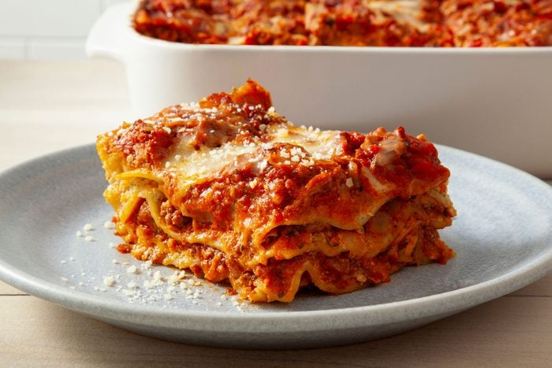

Lasagna!

Description
So it's basically like pasta with some sauce, meat & cheese in it.
Don't forget to place the final mix in the oven at 200 degrees for 30 minutes.
Ingredients
- Pasta
- Tomato Sauce
- minced meat
- Cheese
- basmil
Steps
- Boil the pasta: Skip this step if you’re using fresh pasta, no-boil noodles or oven-ready noodles.
- Prepare the lasagna ingredients: Cook the meat, make a sauce and prepare any cheesy fillings.
- Make the layers: Fill the casserole dish with layers of sauce, noodles and cheese. Starting with sauce on the bottom keeps the noodles from sticking.
- Rest before slicing: Resting is often overlooked, but it’s the secret to preventing a soupy mess on the plate.